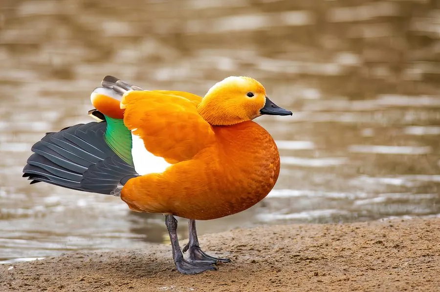

鸟类 · 动物界
赤麻鸭 Tadorna ferruginea

通体橙栗色的大型鸭类，头部颜色较浅，飞行时翅膀黑白分明，因羽毛橙红如铜，在藏语中被称为“黄鸭”。
- 分类
- 门脊索动物门纲鸟纲目雁形目科鸭科属麻鸭属
- 栖息环境
- 高原湖泊、河流、草原湿地、沼泽和农田，多在土洞岩缝中营巢
- 地理分布
- 欧亚大陆和北非，中国西北、青藏高原和内蒙古繁殖，南方越冬
- 保护级别
- IUCN 无危（LC）；中国“三有”保护动物
物种志
赤麻鸭体长 58–70 cm，体重约 0.9–1.6 kg，翼展 110–135 cm。它的全身羽毛呈橙栗色，头部和颈部颜色较浅，呈淡黄褐色，颈基有一圈黑色细环（繁殖期雄鸟明显）；翅膀白色，飞羽黑色，飞行时黑白分明，尾羽黑色，喙和脚黑色。
赤麻鸭分布于欧亚大陆和北非的草原、高原湖泊、河流和沼泽，中国西北、青藏高原和内蒙古是主要繁殖区，冬季南迁到中国南方和南亚。它们以水生植物、谷物、昆虫和小型水生动物为食，常成对或小群活动。赤麻鸭喜欢在土洞、岩缝和废弃建筑中营巢，每窝产卵 6–12 枚，孵化约 28–30 天。它们是中国青藏高原常见的候鸟，在藏语中被称为“黄鸭”，目前被列为无危物种，中国将其列入“三有”保护名录。
形态与习性
- 食性水生植物、谷物、昆虫和小型水生动物
- 体长58–70 cm
- 体重约 0.9–1.6 kg
- 翼展110–135 cm
- 繁殖每窝 6–12 枚卵，孵化约 28–30 天
- 寿命野外约 10–15 年
- 羽色全身橙栗色，飞行时翅膀黑白分明
趣味知识
- 赤麻鸭通体橙栗色，飞行时翅膀黑白分明，很容易辨认。
- 在青藏高原，它被当地人称为“黄鸭”，是常见的候鸟。
- 赤麻鸭喜欢在土洞、岩缝和废弃建筑中营巢。
- 它们常成对活动，雄雌形影不离。